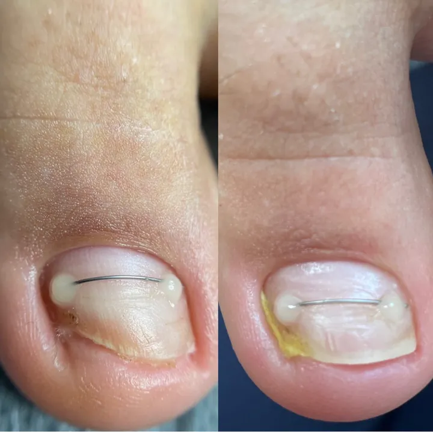
Вросший ноготь
Снимаем врастание без операции. Чтобы ноготь дальше рос правильно, можно поставить коррекционную систему: титановую нить или Light System.
от 1 500 ₽
Студия Ольги Кветковской
Вросший ноготь без операции, стержневые мозоли, трещины и грибок. А ещё маникюр и педикюр, которые носятся от трёх недель.

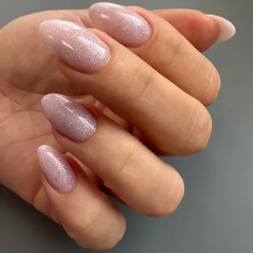
5,0
Яндекс Карты, 204 оценки, «Хорошее место 2026»
5,0
DIKIDI, 257 оценок
15+ лет
опыт руководителя студии в подологии
2500+
клиентов за годы работы
Подолог занимается стопами и ногтями: тем, что болит, мешает ходить или не проходит само. Начать можно с консультации.

Снимаем врастание без операции. Чтобы ноготь дальше рос правильно, можно поставить коррекционную систему: титановую нить или Light System.
от 1 500 ₽
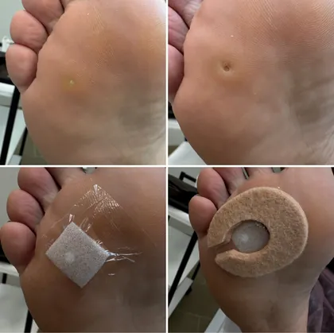
Обработка, разгрузка и рекомендации по уходу.
2 500 ₽ за одну
Педикюр «Сложные стопы»: обработка стоп и ногтей, когда есть трещины и мозоли.
4 500 ₽
Онихомикоз, онихолизис, ониходистрофия. Для работы с грибком в студии есть аппарат AFS, метод подбирают после консультации.
2 500 ₽ за ноготь
Первый приём и повторные обработки.
1 500 ₽, повторно 1 000 ₽
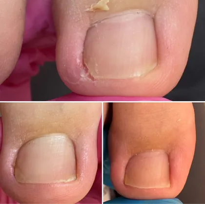
Онихогрифоз, скрученные ногти, последствия травм. Ногти на руках тоже.
от 3 000 ₽
Запишитесь на консультацию: подолог посмотрит и скажет, что делать.
1 500 ₽
Записаться онлайнПодолог смотрит стопы и ногти, спрашивает, что беспокоит, и объясняет, что происходит.
Аппаратная обработка. Инструменты стерилизуют по нормам СанПиН, расходники одноразовые.
Если нужно: титановая нить или Light System, разгрузка мозоли, индивидуальный ортоз между пальцами.
Как ухаживать дома и когда прийти снова. Повторный приём в течение месяца стоит меньше первого.
Студия работает в тандеме с хирургами, дерматологами и ортопедами.
Гель-лак, укрепление гелем, архитектура и френч. Педикюр с покрытием и без, плёнки и глянцевание.
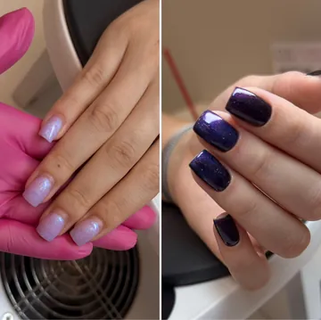
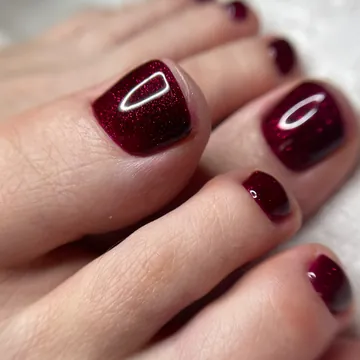
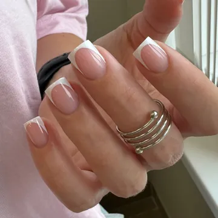
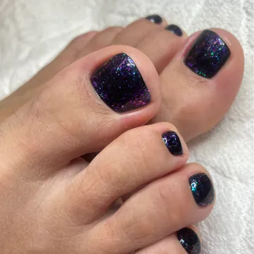
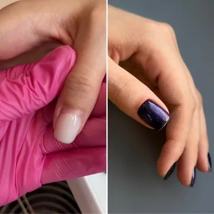
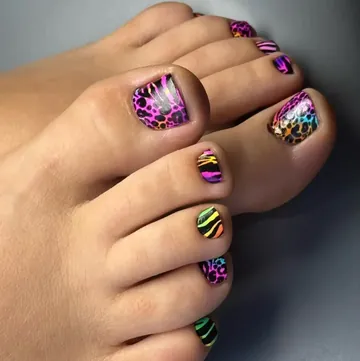
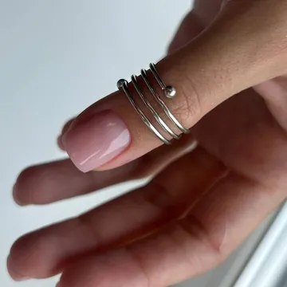
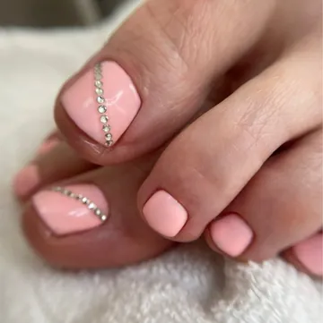
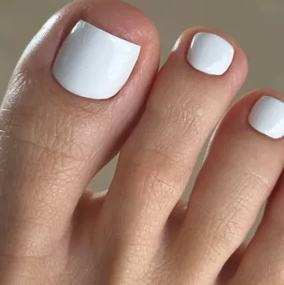
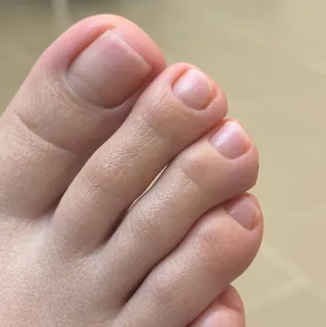
Пудры и масло втирают в ноготь, покрытия нет. Ногти блестят и постепенно крепнут.
2 500 ₽ с маникюром
Бескислотное покрытие, похожее на прозрачный лак. Укрепляет ноготь и выглядит естественно.
2 500 ₽, маникюр входит
Цены из онлайн-записи на 28 октября 2026. Где стоит «от», итог зависит от сложности и мастера.
Записаться онлайн
Руководитель студии, ведущий подолог
Больше 15 лет в подологии. Официальный инструктор по подологии и Smart-педикюру, берётся за сложные случаи.
Проводит индивидуальные стажировки для мастеров по подологии и педикюру: 10 часов, от 18 000 ₽.

Топ-мастер, подолог
Подология, маникюр и педикюр.

Мастер маникюра и педикюра
Покрытие, укрепление гелем, бондирование, педикюр.
Пять звёзд на Яндекс Картах и в DIKIDI. Ещё 158 отзывов на Яндекс Картах.
«Пришла я хромая и с болью от вросшего ногтя. Мастер мне всё объяснила про мои ногти, устранила причину боли.»
«Сделала мне самый безболезненный педикюр в моей жизни и достаточно быстро!»
«Ольга Николаевна не испугалась сложности и стала работать со мной.»
«Я очень боялась, она меня успокоила, и оказалось всё не так страшно и больно, как я думала.»
«Быстро и по делу обработали подростку проблемный ноготь. Дали дельные советы по профилактике.»
«Маникюр сделан тонко, аккуратно и красиво, педикюр максимально комфортный и безболезненный.»


В онлайн-записи выберите «Консультация подолога» (1 500 ₽, 30 минут) или «Не понимаю, какая услуга мне нужна» (от 2 500 ₽, час). Мастер посмотрит на месте и предложит, что делать.
Студия работает с вросшими ногтями без операции: обработка, а если нужно, коррекционная система, титановая нить или Light System. Первичный приём стоит от 2 500 до 4 000 ₽, в зависимости от стадии воспаления. Если врастание только началось и воспаления нет, приём стоит 1 500 ₽.
По нормам СанПиН, расходные материалы одноразовые. Зона стерилизации находится прямо в студии.
Да. Мужской маникюр без покрытия стоит 1 500 ₽, педикюр и подология по общему прайсу.
Да, в студии есть подарочные сертификаты. Подробности лучше уточнить по телефону.
Ольга Кветковская проводит индивидуальные стажировки по подологии и педикюру: 10 часов, от 18 000 ₽.
Новое Девяткино, Главная улица, 13
2 этаж, офис 2
Остановка «ТК Главный» в 200 метрах, метро «Девяткино» в 1,7 км
Без выходных, 10:00-21:00